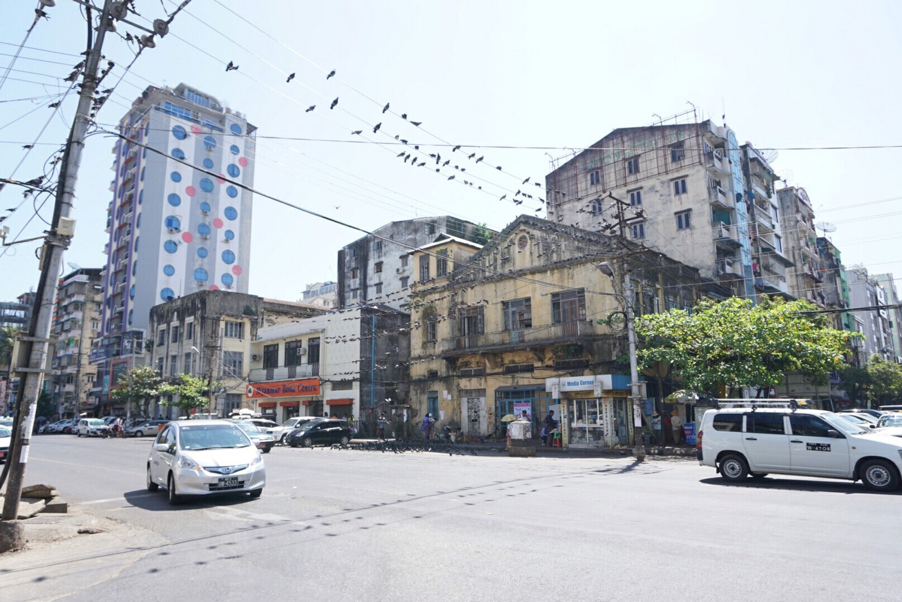
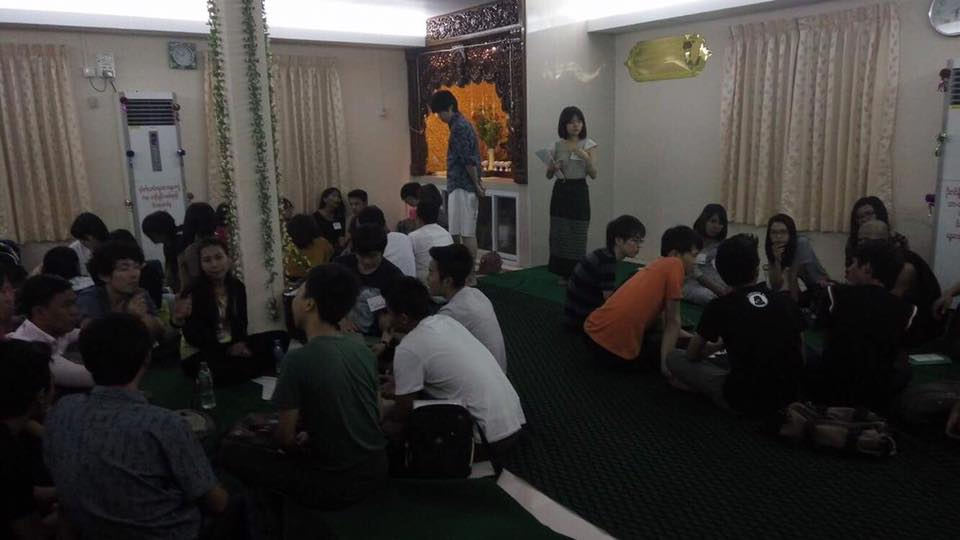
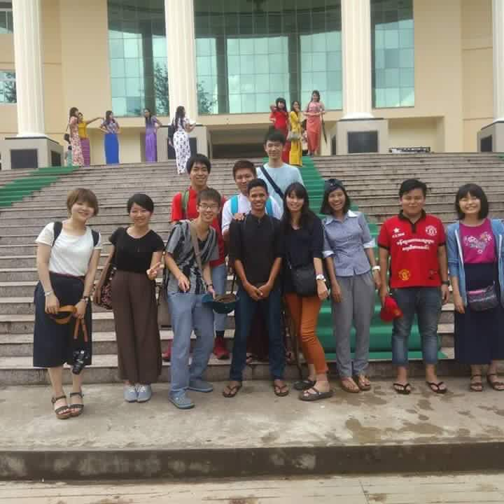

ミャンマーと言えばどういうイメージを持つでしょうか？
数年前までは軍事政権の独裁、アウンサン・スーチーさん、近年はアジアのフロンティアとして企業進出が盛ん・・・などなどのイメージがあると思いますが、注目を集めるようになったのはごく最近の話です。実際、ミャンマーで活動している学生団体というのは他の東南アジアの国に比べると全然少ないんです。

その中で、JBSIチームは、ミャンマーで活動する数少ないチームです！ほかの東南アジアの国と比べると、まだ日本との距離があるように思えるミャンマー。しかし、ミャンマーにはたくさんの知られざる魅力があります。是非ミャンマーで活動してみませんか？

現在提携しているのは、サッカーファンが集まり発足させた学校建設や災害避難支援などを行う慈善団体です。実はミャンマーにはとても根強い募金や相互支援の文化・習慣があり、この団体も数百人規模の大きな団体となっています。また実際に現地に行った際には日本語学校の生徒にも参加してもらったりと、団体の垣根を超え広くミャンマーの若者たちと交流・活動しています。彼らは日本への関心が高く、同時にミャンマーの社会問題について真剣に議論をしてくれる人たちです。一方で、歓迎パーティを開いてくれたり、一緒に観光をワイワイしたりと、温かく迎えいれてくれる、ミャンマー人の人の好さをまさしく体現しています。彼らとプロジェクトを作っていくのはとても楽しくやりがいがあります！
JBSI部門では現在、2016年夏の視察、2017年春にはさらなる視察と火事に関する教育プロジェクトの実施を経て、火事問題の解決を目標に活動しています。実はミャンマーは災害への脆弱性が世界で最も高い国で、火災の発生数も多くなっています。現地の方々の知識と意識に焦点を当てつつどうやったら火事を減らすことができるか、我々は日本人として何ができるか、よく考えながら今後も活動を続けていきます。
